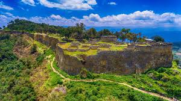
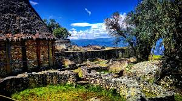
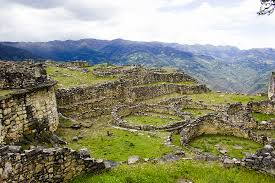
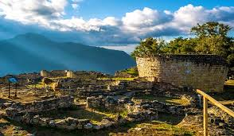

📍 1. Historia y Ubicación

- Ubicación: Región Amazonas, provincia de Luya, Perú.
- Construida por la cultura Chachapoya alrededor del siglo VI d.C.
- Considerada una de las fortalezas de piedra más importantes de Sudamérica.
🏰 2. Arquitectura y Paisaje

- Murallas de hasta 20 metros de altura rodean el complejo.
- Contiene más de 400 estructuras circulares de piedra.
- Ubicada a 3,000 m.s.n.m., con vistas impresionantes al valle del Utcubamba.
🌄 3. Significado Cultural

- Fue un importante centro político, militar y religioso de los Chachapoya.
- Conocido como la “Machu Picchu del norte”.
- Espacio sagrado que refleja la cosmovisión andino-amazónica.
🚡 4. Importancia Turística

- Uno de los principales atractivos turísticos del norte del Perú.
- Acceso moderno gracias al teleférico de Kuélap.
- Destino para viajeros interesados en arqueología y naturaleza.